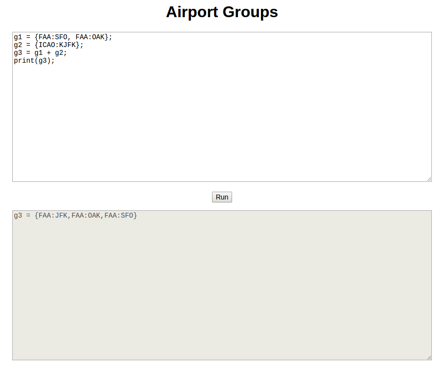

Airport Groups is a simple web app to showcase a possible method for creating groups of airports. Here's a screen shot of the app.
You use the upper portion of the page to define your groups. To make sure you've defined your groups correctly, push the Run button and check the output in the lower portion of the page.
Here's the defintion of a very simple group.
g1 = {FAA:SFO};
print(g1);
If you enter this into the input field of the app and then push the Run button, you'll see this displayed.
g1 = {FAA:SFO}
In the first line of your input, you defined a group, called "g1", that consists of a single airport having the FAA code SFO. In the second line, you told the app to print the definition of g1.
Here's a slightly more complicated example:
g1 = {FAA:SFO, FAA:OAK};
g2 = {ICAO:KJFK};
g3 = g1 + g2;
print(g3);
And its output:
g3 = {FAA:JFK,FAA:OAK,FAA:SFO}
Now for some explanations. Airports are specfied by a code type (either ICAO, IATA or FAA), followed by a colon, followed by the code. You define a group of airports by listing them between braces. The airports must be separated by commas. You can give a group a name by entering it on the left hand side of an equals sign. To print the definition of a group, use the print command. All commands are separated from each other with semi-colons.
The third line of the second example, "g3 = g1 + g2", shows how to combine groups with the plus sign, or union operator.
You now know the basics of how to define and print simple groups. In the next section, you'll see examples that introduce other group operators.
You can combine groups by using different operators:
Input:
g1 = {FAA:SFO, FAA:OAK, FAA:LAX};
g2 = {FAA:SFO, FAA:JFK};
union = g1 + g2;
intersection = g1 ^ g2;
difference = g1 - g2;
print(union);
print(intersection);
print(difference);
Output:
union = {FAA:JFK,FAA:LAX,FAA:OAK,FAA:SFO}
intersection = {FAA:SFO}
difference = {FAA:LAX,FAA:OAK}
You can control the order of operations by using parenthesis.
Input:
g1 = {FAA:SFO, FAA:OAK, FAA:LAX};
g2 = {FAA:SFO, FAA:JFK};
g3 = (g1 + g2) - {FAA:LAX};
g4 = g1 + (g2 - {FAA:LAX});
print(g3);
print(g4);
Output:
g3 = {FAA:JFK,FAA:OAK,FAA:SFO}
g4 = {FAA:JFK,FAA:LAX,FAA:OAK,FAA:SFO}
Another way to select certain airports from groups is to use the filter operator '|' with a condition.
Input:
g1 = {FAA:SFO, FAA:JFK};
g2 = g1 | isInState(CA);
print(g2);
Output:
g2 = {FAA:SFO}
There are 7 filter conditions (shown with example arguments):
The input arguments for these filter conditions are:
The filters can be combined with the logical operators:
There's one predefined group, called allAirports, from which that you can define your own groups. For example, the following creates three groups, one with the airports in the US, one with the airports in Califorina, and one with the airports within a 40 mile radius of SFO and north of San Franciso.
Input:
usa = allAirports | isInCountry(USA);
ca = usa | isInState(CA);
northOfSF = ca | (isNorthOf(37.77) && isNearAirport(FAA:SFO, 40));
print(northOfSF);
Output:
northOfSF = {FAA:CCR,FAA:DVO,FAA:7CL1,FAA:81CL,FAA:CA63,FAA:CL85,
FAA:CN06,FAA:CA26,FAA:CA27,FAA:59CA,FAA:CN02,FAA:CA35,FAA:5CA3,
FAA:17CA,FAA:JMC,FAA:22CA,FAA:60CA}
Filters can be given names and grouped with parentheses. For example, the following defines a group of airports in a 1 degree by 1 degree square around Chicago, which has longitude and lattitude of (41.88, -87.63).
Input:
usa = allAirports | isInCountry(USA);
il = usa | isInState(IL);
betweenNS = isNorthOf(41.38) && isSouthOf(42.38);
betweenEW = isEastOf(-88.38) && isWestOf(-87.38);
inBox = il | (betweenNS && betweenEW);
print(inBox);
Output
inBox = {FAA:DPA,FAA:MDW,FAA:ORD,FAA:PWK,FAA:IGQ,FAA:LOT, ... }